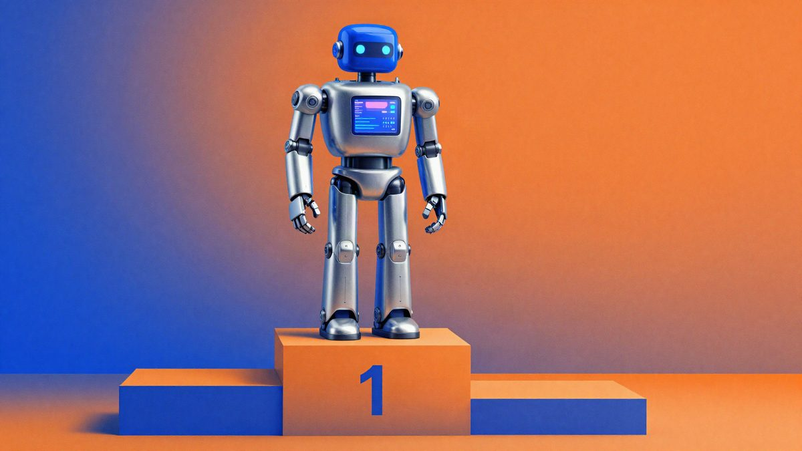

Qwen3.8 Max s 56 bodova dostigao Claude Opus 4.8, ali Kimi K3 je bolji i jeftiniji

Alibabin Qwen3.8 Max skočio je na Artificial Analysis Intelligence Indexu na 56 bodova, što je prema Artificial Analysisu razina Clauda Opus. Zadatak sada košta oko 1,05 eura, više nego dvostruko u odnosu na prethodnu verziju, a Kimi K3 ima 57 bodova uz oko 25 posto nižu cijenu. Stopa halucinacija je porasla s 23 na 40 posto.
Alibabin model Qwen3.8 Max je na Artificial Analysis Intelligence Indexu dobio 56 bodova, 10 više nego Qwen3.7 Max s 46. Prema Artificial Analysisu, to je razina Claudea Opus 4.8, a ispred je GLM-5.2 (51 bod). Ispred njega ostaje Kimi K3 sa 57 bodova, koji je pritom oko 25 posto jeftiniji.
Veliki skok na zadacima iz prakse
Na GDPval-AA, testu koji mjeri rješavanje radnih zadataka, Qwen3.8 Max je skočio za 468 Elo bodova, na 1.739, i prestigao Kimi K3 (1.685). Više bodova ima samo Claude Opus 5, s 1.852.
Taj rezultat ima cijenu. Qwen3.8 Max treba 64 koraka po zadatku umjesto prijašnjih 14, a ulazni tokeni su narasli 15 puta jer test u svakom koraku modelu ponovno šalje cijelu povijest razgovora. Model radi temeljitije, ali sporije i skuplje.
Niže cijene tokena, ali viši trošak po zadatku
Alibaba je spustila cijene tokena. Ulaz sada košta oko 1,85 eura po milijunu tokena (prije oko 2,30), izlaz oko 5,50 eura (prije oko 6,90), a pogodak u cacheu oko 0,23 eura (prije oko 0,46). Unatoč tome se omjer cijene i performansi pogoršao.
Jedan zadatak iz Intelligence Indexa sada košta oko 1,05 eura, više nego dvostruko u odnosu na Qwen3.7 Max (oko 0,49 eura). Kimi K3 ima bod više, a košta oko 0,79 eura po zadatku, dok GLM-5.2 košta oko 0,52 eura.
Nazadovanje u pojedinim testovima
U odnosu na prethodnu verziju ima i slabijih rezultata. Na AA-LCR-u, testu koji provjerava može li model ispravno povezati informacije iz vrlo dugih tekstova, pao je za 2 boda. Na AA-Omniscienceu, koji mjeri odgovara li model točno na pitanja iz općeg znanja ili priznaje da ne zna, pao je za 10 bodova.
Postotak točnih odgovora ostaje oko 31 posto, ali je stopa halucinacija porasla s 23 na 40 posto. Qwen3.8 Max dakle češće nagađa umjesto da prizna da ne zna odgovor.
Izvor: The Decoder (Kimi)
Povezani članci
 Mercor vrijedi oko 18 milijardi eura, a svaki od trojice osnivača ima oko 3,9 milijardi eura imovine12. studenoga 2026.
Mercor vrijedi oko 18 milijardi eura, a svaki od trojice osnivača ima oko 3,9 milijardi eura imovine12. studenoga 2026. Claude je napisao i istrenirao jezični model za DOS od 367.000 parametara koji stane na disketu15. studenoga 2026.
Claude je napisao i istrenirao jezični model za DOS od 367.000 parametara koji stane na disketu15. studenoga 2026. Claude je u zadatku s titlovima upozorio na skriveni tekst o autorskim pravima u izlazu alata15. studenoga 2026.
Claude je u zadatku s titlovima upozorio na skriveni tekst o autorskim pravima u izlazu alata15. studenoga 2026.